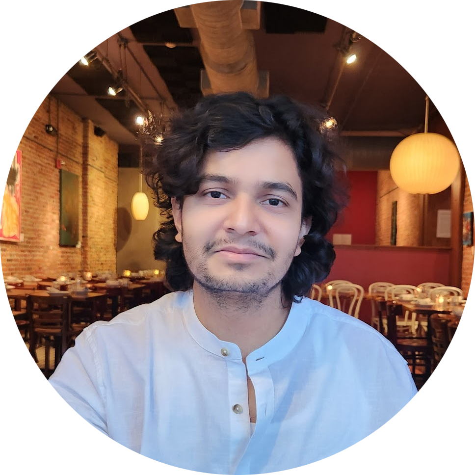
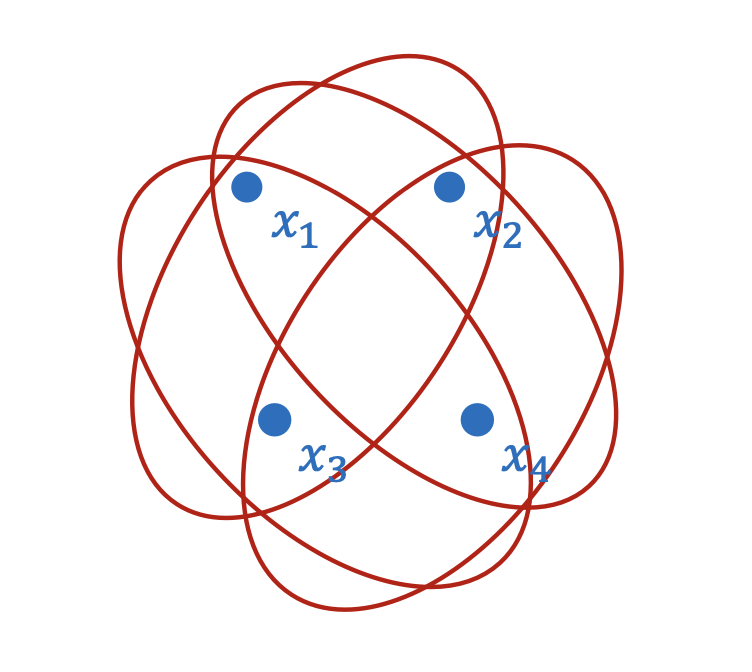
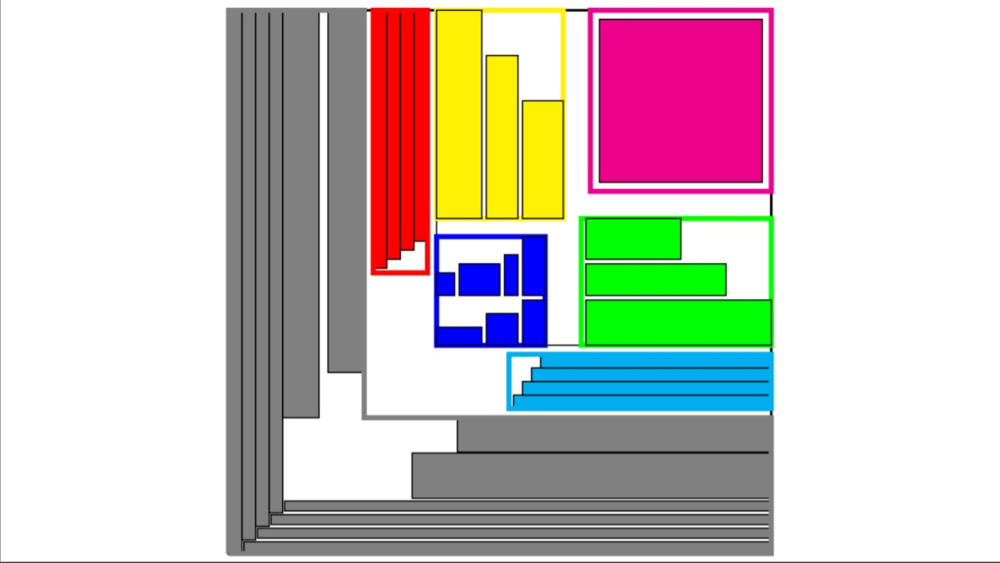
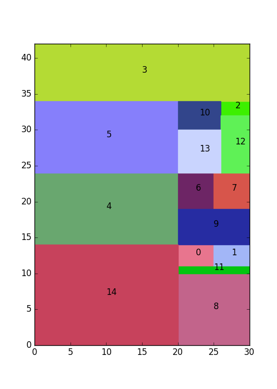
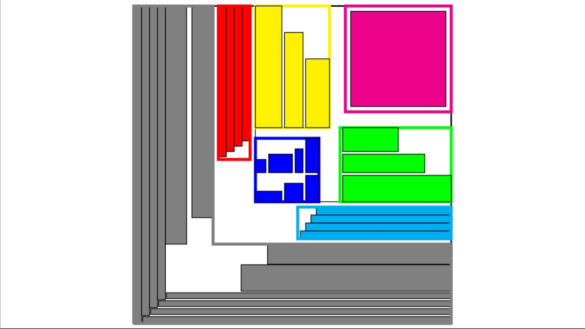
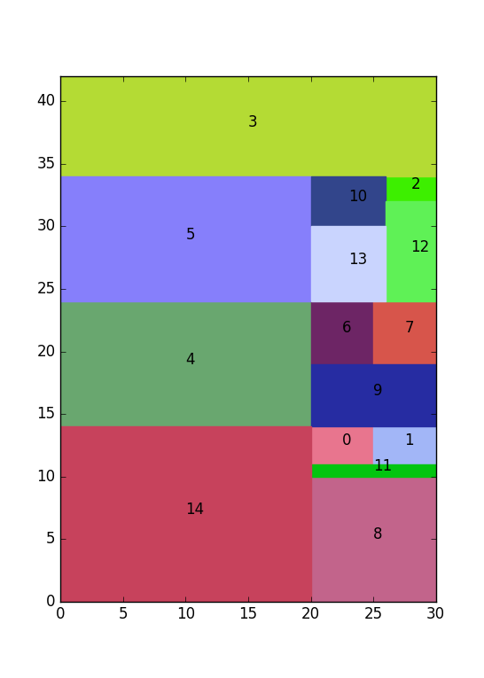
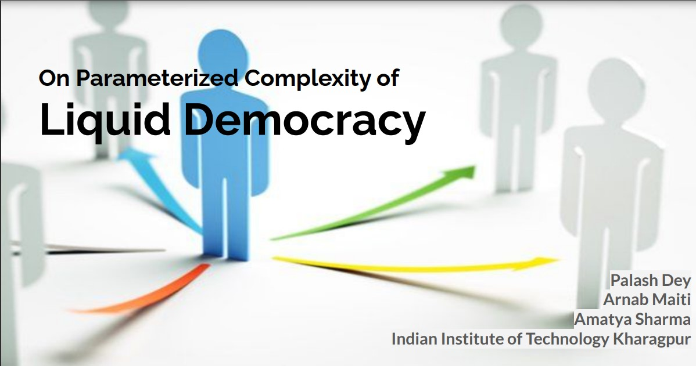
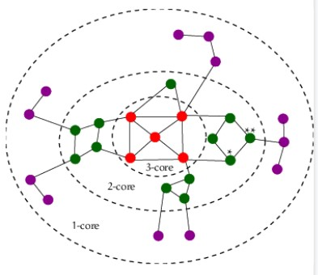
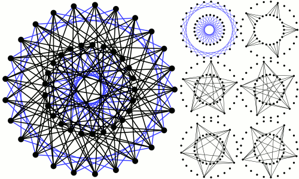
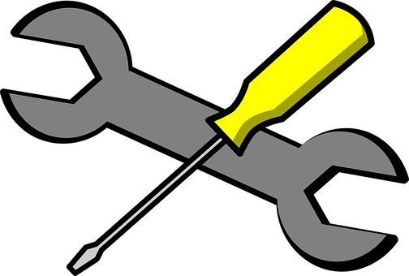

Amatya Sharma
Department of Computer Science and Engineering
University of Michigan, Ann Arbor
amatya [at] umich.edu
|
|
|
|
I am a Ph.D. Candidate in Theoretical Computer Science at
University of Michigan, Ann Arbor, fortunate to be co-advised by
Nikhil Bansal and Euiwoong Lee.
I earned a Dual Degree (BTech+MTech) from the Computer Science and Engineering Department,
Indian Institute of Technology (IIT) Kharagpur.
My research intersts include Theoretical CS, including Approximation, Online, Randomized, Parameterized Algorithms, and Game Theory. Lately, I have been delving into Approximation algorithms and Constrained Satisfiability Problems.
Over the past years, I have had great collaborators including Prof.
Ashish Chiplunkar (IIT Delhi),
Arindam Khan (IISc Bangalore),
Andreas Wiese (UofChile),
and Palash Dey (IIT Kharagpur).
News
[Aug 2024]
Thrilled to present our paper on MinCSPs on Complete Instances at SODA'25.
[Aug 2024]
A Decomposition Approach to Weighted k-Server appearing at FSTTCS'24.
[Aug 2024]
Super excited to be a Teaching Assistant for the Intro to Algorithms Course (EECS 477)!
[Aug 2023]
Will be organizing Theory Talks and Lunches at U-Mich. For more info, join the
mailing list.
[Mar 2022]
Received PhD offers from U-Mich, Georgia Tech, U of Toronto, and EPFL.
[Jul 2021]
Full-time PPO from Oracle R&D, Bangalore.
[May 2021]
Presenting Guillotine Separable Packings for 2D Knapsack at HALG'21.
[Apr 2021]
Interning at Oracle R&D from May to July 2021.
[Feb 2021]
SoCG'21 paper accepted—first SoCG from IIT Kharagpur in 26 years.
paper
[Nov 2020]
First publication! Liquid Democracy at CALDAM'21.
paper
Publications
My research spans Approximation, Online, Randomized, Parameterized Algorithms, Algorithmic Game Theory.
My prior research focuses on the design and analysis of Approximation and Parameterized Algorithms for Computational Geometric and Game Theoretic Problems.
(Note: For theory papers, author names are listed alphabetically.)

Min CSPs on Complete Instances
Aditya Anand, Euiwoong Lee, Amatya Sharma
In SODA 2025
Initiated the study of complete instances for Minimization Constraint Satisfiability Problems. Proved results for Min-2CSP and k-CSPs.
 



Two Dimensional Guillotine Strip Packing
Arindam Khan, Aditya Lonkar, Arnab Maiti, Amatya Sharma, Andreas Wiese
In ICALP 2022.
A (3/2 + ε)-approximation algorithm for 2D Strip Packing in Guillotine Separable setting, including a PPTAS.


Other Projects
In addition to published work, I've explored numerous projects, including Theory CS, Computer Architecture, Software Engineering (Full Stack Development), Machine Learning, Compilers etc.
Gaussian Process Kernels
Prince Bharadwaj, Adarsh Goyal, Nwe Ni Kyaw, and Amatya Sharma
Advanced Machine Learning Course Term Project.
A term project on Local and Global Approximation techniques for Gaussian Process Kernels, followed by experiments on numerous approximation prevailing techniques.
Shoten: An e-BookStore
Udit Desai and Amatya Sharma
Software Engineering Course Term Project, November 2020.
Full Stack development of an online bookstore employing HTML, CSS, JSP, and MySQL.
TinyC Compiler
Divyang Mittal and Amatya Sharma
Compilers Course Project, November 2019.
Implemented a Compiler for TinyC, a subset of C with a reduced set of functionalities, using Yacc, Bison, FLEX, C, and C++.
RISC Processor
Nikhil Shah and Amatya Sharma
Computer Architecture Course Project, November 2019.
Developed a Reduced Instruction Set Computer Processor and simulated it on FPGA Spartan 3 boards using Verilog.
Talks By Me
Here are some of the talks I have given at various conferences, workshops, and classes.
Bidimensionality: Parameterized Algorithms
Amatya Sharma
Parameterized Algorithms (CS60083) Course Presentation, November 2020.
Talk on the concept of bidimensionality and bidimensional problems, a tool for developing parameterized algorithms for a vast set of problems employing the concept of tree-width.
Awards & Achievements
Below are some of the awards and achievements I have received throughout my academic career.
Courses Taken
Most of the curriculum courses I have taken are in close vicinity to Theoretical Computer Science. I have also taken elective classes in the field of AI including Reinforcement Learning and Natural Language Processing.

Algorithms & Maths
Approximation and Online Algorithms (EECS 598-0101, CS60023), Parameterized Algorithms (CS60083), Algorithmic Game Theory (CS60025), Randomized Algorithms (CS60029), Advanced Graph Theory (CS60047), Computational Geometry (CS60064), Theory Of Computation (CS41001), Computational Complexity (CS60043), Lattices in Cryptography (EECS 598), Selected Topics in Algorithms (CS60086), Cryptography & Network Security (CS60065), and Linear Algebra (MA20105).

Artificial Intelligence & Machine Learning
Reinforcement Learning (CS60077), Statistical Foundations of AI & ML (AI61004), Deep Learning (CS60010), Natural Language Processing (CS60075) and Advanced Machine Learning (CS60073).

Other Courses and Software Tools/Skills
Discrete Mathematics, Algorithms, Operating Systems, Computer Networks, Software Engineering.
Java Cryptography Architecture, GIT, BitBucket, JUnit, MySQL, LaTex, Matlab, SolidWorks, HTML, CSS, PHP, JSP, Java, Python, C++, C, BISON, Yacc, FLEX.
About Me
I am a coffee aficionado straight from the Himalayas. To know more about the coffees I have had, scenic places I've been to, or my music taste, check out this webpage.
Calendar & Contact
Contact
Amatya Sharma
2741 Bob and Betty Beyester Building
Ann Arbor, MI (US)
48109
Email: amatya[at]umich.edu
Last update: 03/2025. Website adapted from Jon Barron


{kind=link}